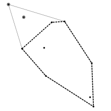

给定平面上 $n$ 个点，你需要找出其中两个点，使得删去它们后，"剩下 $n - 2$ 个点构成的凸包的周长" 与 "原来 $n$ 个点构成的凸包的周长" 的差 (的绝对值) 尽可能大，输出这个最大值。
第一行包含一个正整数 $n$ ($5 \leq n \leq 10^5$)，表示点的个数。
接下来 $n$ 行，每行包含两个整数 $x_i, y_i$ ($-10^6 \leq x_i, y_i \leq 10^6$)，描述平面上的一个点。保证这些点互不相同，且这 $n$ 个点的凸包面积大于 $0$。
输出一行一个实数，表示凸包周长差的最大值。答案被认为正确当且仅当相对或绝对误差不超过 $10^{-4}$。
先考虑删去一个点怎么做。
显然我们是枚举这个点，然后对剩下的点求凸包，找到周长差最大的。时间复杂度 $O \left( n^2 \right)$，不能通过。
我们注意到，如果删去的点在原来 $n$ 个点构成的凸包 $H$ 内部，则新的凸包 (即 "新的点集构成的凸包") 和原凸包其实是一样的，此时答案为 $0$，不产生贡献。
如果删去的点在凸包 $H$ 的边界上 (确切地说应该是 "角" 上)，则删去后凸包变小，变为原凸包的子集。由凸图形子集周长原理 (即凸多边形 $A, B$ 满足 $A$ 包含于 $B$，则 $A$ 的周长小于 $B$ 的周长)，新的凸包的周长会变小。
因此我们只需枚举凸包边界上的点统计答案即可。
这样的时间复杂度为 $O \left( \left| H \right| n \right)$，还是过不去。
我们考虑删去一个点后哪些点会对答案产生贡献。
设凸包为 $H = P_0 P_1 P_2 \cdots P_{k-1}$，我们删去了 $P_i$。则只有位于三角形 $P_{i-1} P_i P_{i+1}$ 内部的点才会对答案产生贡献 (这里的下标 $i$ 是模 $k$ 循环意义下的)。
那怎么得到这些点呢？我们任取凸包内部的一个点 $G$ (实际上所有 $\left| H \right|$ 个点的 $1-$质心，即横纵坐标的算术平均值一定在凸包内部)，把 $G$ 看作极点，将凸包上的所有点按照极角排序，则三角形 $P_{i-1} P_i P_{i+1}$ 内部的点在极角序中一定在 $P_{i-1}$ 和 $P_{i+1}$ 之间。
这样，我们只要枚举这个区间中的所有点，然后用叉积判断是否在三角形内部 (即是否在 $P_{i-1} P_{i+1}$ 外侧)，再用单调栈扫一遍即可得到这段区间新的凸包。计算一下周长差即可更新答案。
我们来分析一下这样做的时间复杂度。我们将所有点分为 $k$ 组，第 $i$ 组的点就是极角序在 $P_i$ 和 $P_{i+1}$ 之间的点。由上面的算法，每一组的点只会被两个不同的 $i$ 所更新到，且更新时的统计是线性的。因此总时间复杂度为 $O \left( 2 n \right) = O \left( n \right)$。
故复杂度为 $O \left( n \log n \right)$。
现在回到原题——即删去两个点的情况。
我们记 $v_i$ 表示上文中删去 $P_i$ 所得到的周长差。先是最简单的情况，即删去的两个点 $P_i, P_j$ 没有互相影响，此时新的周长差就是 $v_i + v_j$。
而 $P_i, P_j$ 不影响的充要条件就是 $\left| i - j \right| > 1$ (模 $k$ 循环意义下，确切地说应该是 $1 < \left| i - j \right| < k - 1$)。
于是，我们只需取 $4$ 个最大的 $v_i$，两两检验并求和取 $\min$ 即可。可以证明，如果这类答案能更新，一定是前 $4$ 个 $v_i$ 所产生的。
接下来的情况就是 $\left| i - j \right| = 1$ 的情况了，也就是删去相邻两个点。
由于这类情况只有 $n$ 种 (转一圈)，还是考虑枚举所有的情况。然后和 "删去一个点" 一样地，枚举极角序在 $P_{i-1}$ 和 $P_{i+2}$ 中的所有点，得到它们所产生的凸包，然后计算周长差。
时间复杂度分析还是类似地，由于每一组的点至多被 $3$ 个不同的 $i$ 更新到，故这里的统计仍然是 $O \left( 3 n \right) = O \left( n \right)$ 的。
就只有这两种情形了吗？不止的，还有第三种情形。
由于删去一个点后，原来在凸包内部的点可能跑到了边界上，而如果此时删去那个点，就不属于刚刚统计到的范畴！
这时的解决方案是：还是先枚举在原凸包上的点 (一共 $n$ 个)，然后得到新的凸包，然后对于新凸包中新产生的一段再套用 "删去一个点" 的算法，即可得到最小值。
这样做的复杂度仍然是正确的，因为新凸包中每一组的点至多被 $2$ 个不同的 $i$ 所统计，因此复杂度还是 $O \left( 4 n \right) = O \left( n \right)$。
不过要注意，一定要对新产生的一段使用，否则复杂度将会是错误的。不过如果我们删的第二个点如果不在 "新产生的一段" 上，则这是属于前两种情形的，这里就不用讨论了。
以上三种情形就包含了所有可能的情形，最后取个 $\min$ 就好啦。总时间复杂度还是 $O \left( n \log n \right)$ 的。
#include <bits/stdc++.h>
#define N 100054
const double eps = 2e-10;
#define lt(x, y) ((x) < (y) - eps)
#define gt(x, y) ((x) > (y) + eps)
#define le(x, y) ((x) <= (y) + eps)
#define ge(x, y) ((x) >= (y) - eps)
#define eq(x, y) (le(x, y) && ge(x, y))
#define dot(x, y, z) (((y) - (x)) * ((z) - (x)))
#define cross(x, y, z) (((y) - (x)) ^ ((z) - (x)))
struct vec2 {
double x, y;
vec2 (double x0 = 0.0, double y0 = 0.0) : x(x0), y(y0) {}
vec2 * read() {scanf("%lf%lf", &x, &y); return this;}
inline vec2 operator - () const {return vec2(-x, -y);}
inline vec2 operator + (const vec2 &B) const {return vec2(x + B.x, y + B.y);}
inline vec2 operator - (const vec2 &B) const {return vec2(x - B.x, y - B.y);}
inline vec2 operator * (double k) const {return vec2(x * k, y * k);}
inline vec2 operator / (double k) const {return *this * (1.0 / k);}
inline double operator * (const vec2 &B) const {return x * B.x + y * B.y;}
inline double operator ^ (const vec2 &B) const {return x * B.y - y * B.x;}
inline double norm2() const {return x * x + y * y;}
inline double norm() const {return sqrt(x * x + y * y);}
inline bool operator < (const vec2 &B) const {return lt(x, B.x) || (le(x, B.x) && lt(y, B.y));}
inline bool operator == (const vec2 &B) const {return eq(x, B.x) && eq(y, B.y);}
inline bool operator << (const vec2 &B) const {return lt(y, 0) ^ lt(B.y, 0) ? lt(B.y, 0) : gt(*this ^ B, 0) || ge(*this ^ B, 0) && ge(x, 0) && lt(B.x, 0);}
inline vec2 trans(double a11, double a12, double a21, double a22) const {return vec2(x * a11 + y * a12, x * a21 + y * a22);}
};
inline void down(double &x, const double y) {x > y ? x = y : 0;}
inline bool polar_cmp(const vec2 A, const vec2 B) {return A << B;}
double perimeter(int n, vec2 *poly) {
double ret = (poly[n - 1] - *poly).norm();
for (int i = 1; i < n; ++i) ret += (poly[i - 1] - poly[i]).norm();
return ret;
}
int graham(int n, vec2 *p, vec2 *dest) {
int i = 2; vec2 *ret = dest;
std::iter_swap(p, std::min_element(p, p + n));
std::sort(p + 1, p + n, [p] (const vec2 A, const vec2 B) {double r = cross(*p, A, B); return gt(r, 0) || (ge(r, 0) && lt(A.norm2(), B.norm2()));});
for (*ret++ = *p, *ret++ = p[1]; i < n; *ret++ = p[i++])
for (; ret != dest + 1 && ge(cross(ret[-2], p[i], ret[-1]), 0); --ret);
return *ret = *p, ret - dest;
}
int n, m;
int ch[N], o[N];
vec2 p[N], CH[N], G;
int fh[N], *pfh;
int fyh[N], *pfyh;
double val[N], ans = 0.0;
#define Fy(u, v) check(o[u], o[v]) && (down(ans, val[o[u]] + val[o[v]]), 0);
inline bool check(int x, int y) {return abs(x - y) > 1 && abs(x - y) < m - 1;}
void continual(int *ba, int *&fy, int u, int v, int F1, int F2) {
fy = ba, *fy++ = u;
for (int i = (u + 1) % n; i != v; ++i %= n)
if (i != F1 && i != F2 && (lt(cross(p[i], p[u], p[v]), 0) || u == v)) {
for (; fy != ba + 1 && ge(cross(p[ fy[-2] ], p[i], p[ fy[-1] ]), 0); --fy); *fy++ = i;
}
for (; fy != ba + 1 && ge(cross(p[ fy[-2] ], p[v], p[ fy[-1] ]), 0); --fy);
*fy++ = v;
}
double scare_solve(int L, int M, int R) {
int i, u, v, m = pfh - fh; double cur, min = 0.0;
for (i = 1; i < m - 1; ++i) {
u = fh[i - 1], v = fh[i + 1], cur = 0.0;
continual(fyh, pfyh, u, v, fh[i], M);
for (int *it = fyh; ++it != pfyh; cur += (p[it[-1]] - p[*it]).norm());
down(min, cur - (p[u] - p[fh[i]]).norm() - (p[fh[i]] - p[v]).norm());
}
return min;
}
int main() {
int i, j, u, v; double cur;
scanf("%d", &n);
for (i = 0; i < n; ++i) p[i].read();
m = graham(n, p, CH), assert(m >= 3);
for (i = 0; i < m; ++i) G = G + CH[i]; G = G / m;
for (i = 0; i < n; ++i) p[i] = p[i] - G;
for (i = 0; i < m; ++i) CH[i] = CH[i] - G;
std::sort(p, p + n, polar_cmp), std::sort(CH, CH + m, polar_cmp);
for (j = i = 0; i < m; ch[i++] = j)
for (; j < n && !(p[j] == CH[i]); ++j);
// Case 1
for (i = 0; i < m; ++i) {
u = ch[(i + m - 1) % m], v = ch[(i + 1) % m], cur = 0.0;
continual(fh, pfh, u, v, ch[i], -1);
for (int *it = fh; ++it != pfh; cur += (p[it[-1]] - p[*it]).norm());
val[i] = cur - (p[u] - p[ch[i]]).norm() - (p[ch[i]] - p[v]).norm();
down(ans, val[i] + scare_solve(u, ch[i], v));
}
// Case 2
if (m >= 4) {
for (i = 0; i < m; ++i) o[i] = i;
std::sort(o, o + m, [] (const int x, const int y) {return val[x] < val[y];});
Fy(0, 1) Fy(0, 2) Fy(0, 3) Fy(1, 2) Fy(1, 3) Fy(2, 3)
}
// Case 3
for (i = 0; i < m; ++i) {
u = ch[(i + m - 1) % m], v = ch[(i + 2) % m], j = ch[(i + 1) % m], cur = 0.0;
continual(fh, pfh, u, v, ch[i], j);
for (int *it = fh; ++it != pfh; cur += (p[it[-1]] - p[*it]).norm());
down(ans, cur - (p[u] - p[ch[i]]).norm() - (p[ch[i]] - p[j]).norm() - (p[j] - p[v]).norm());
}
printf("%.12lg\n", -ans);
return 0;
}
坑1：在用单调栈扫新凸包的过程中，注意要排除掉已经删去的点，避免计算出的新凸包周长偏大。
坑2：注意凸包只有三个点的情况，此时 $P_{i-1} \equiv P_{i+2}$，因此判断在 $P_{i-1} P_{i+2}$ 外侧就不需要 "叉积 $< 0$" 的条件，即如果两端点相同则所有点都满足在外侧。